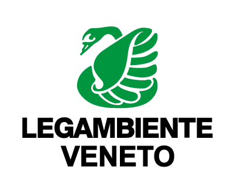
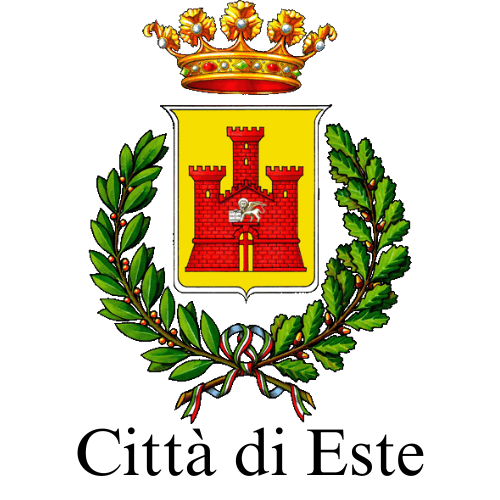
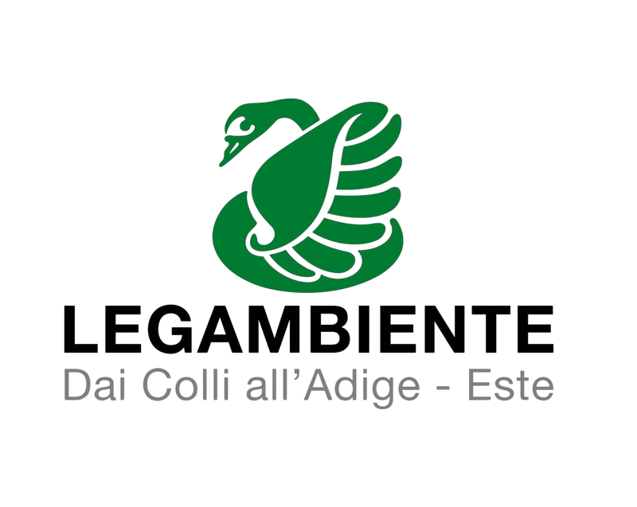

MAPPARE E CURARE
Un progetto dedicato all'impegno e alla partecipazione attiva dei giovani (14-35 anni) sui temi della sostenibilità ambientale, finalizzato a stimolare relazioni e connessioni tra i cittadini e i loro territori.
apri la mappa e scopri
quanto conosci GLI ALBERI dei giardini di este!
📅 📅
presso Giardini del Castello di Este
inaugurazione delle targhe leggio installate dal Comune di Este presso due ingressi dei Giardini.
presso Aula Magna ex Collegio Vescovile
PRESENTAZIONE DEL PROGETTO: il gruppo di giovani volontari presenterà alla comunità gli esiti del lavoro di mappatura svolto in questi mesi.
Questo evento è ospitato all’interno del programma della micro-rassegna culturale “Come Essere Albero” di NATURA FUTURA e Associazione ALIdARTE APS.
Info qui: naturafutura.it
A Este, a , un gruppo di giovani volontari, dopo aver fatto formazione con Legambiente, ha realizzato una mappa digitale interattiva contenente informazioni utili per riconoscere gli alberi dei Giardini del Castello Carrarese.
Il gruppo ha realizzato schede descrittive delle specie arboree presenti e convogliato tutti i dati nella mappa che offre così, alla comunità, la possibilità di effettuare un’esplorazione più consapevole della Natura ospitata all’interno del parco.
Partecipanti del progetto:
- Gloria Borsoni,
- Pierluigi Pascuzzi,
- Giulio Lasalandra,
- Alessio Capuzzo,
- Luca Ambrosio,
- Matteo Schievano,
- e Flores Baccini, presidente di Legambiente Este Circolo “Dai Colli all’Adige”
“mappare e curare” non si ferma qui!
unisciti al gruppo di volontari per partecipare alle prossime attività
Per segnalazioni:
mapparecurare.este@gmail.com- 
- 
- 

Piani di intervento in materia di politiche giovanili "Parola ai giovani" Piano di intervento "Protagonisti oggi" presentato dal Comune di Monselice Dgr 281/2024 - Ddr 106/2024 Ente titolare del Progetto Comune di Este - "Mappare e Curare"
Si ringraziano l’Assessore Silvia Bottaro, il dott. Sebastiano Mion, l’ing. Federico Del Piro, Centro Copie Euganeo.